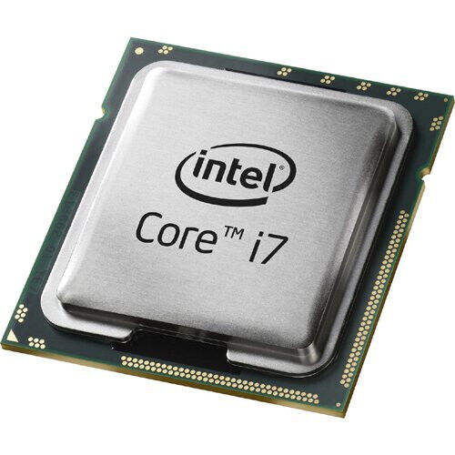

| |
TARJETAS DE EXPANSIÓN |
BUSES |
CHIPSET |
PLACA BASE |
| |
 |
 |
|
En las ranuras de expansión se introducen las tarjetas de expansión que permiten conectar periféricos exteriores al ordenador (tarjeta de vídeo, tarjeta de sonido) |
Los buses son los canales por los que circula toda la información del ordenador, por lo que están presentes tanto en la placa como en todos los dispositivos conectados al ordenador. |
El chipset es un conjunto de chips conectados en la placa base, y se encarga de tareas como la gestión de periféricos externos, transferencia de datos entre la memoria y el microprocesador. |
La Placa Base es una plataforma a la que se conectan a través de ranuras de expansión los demás componentes del ordenador:teclado, ratón, monitor, impresora, etc. |
MEMORIA RAM / RAM CMOS |
MEMORIA CACHE / ROM |
MICROPROCESADOR |
 |
 |
 |
La memoria RAM tiene la función de tener preparadas las instrucciones y los datos para que la CPU pueda procesarlos, y almacenar temporalmente el resultado de las operaciones realizadas por la CPU. Es una memoria volátil, por lo que se pierde su contenido al apagar el ordenador |
La memoria caché es un tipo de memoria RAM mucho más rápida que la convencional. Almacena los datos que vaya a utilizar o que acabe de utilizar la CPU. Está situada entre la CPU y la RAM para agilizar la transferencia de información entre ellos. |
El microprocesador o CPU es el cerebro del ordenador, encargado de realizar todas las operaciones de procesamiento de datos, así como de controlar el funcionamiento de todos los dispositivos del ordenador. |